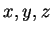

A rotation of atoms requires specifying rotational angles. These are given in the following Rt-menu:
-- Specify ANGLES of rotations in the correct ORDER (!!!) --
--[ CLOCKWISE rotations if looking down from the axes top ]--
--- METHOD 1: give 3 angles DIRECTLY and the order -----
X. Angle about X axis => 0.00000 rad
Y. Angle about Y axis => 0.95568 rad
Z. Angle about Z axis => -0.76687 rad
O. Order of rotations : ZY
--- METHOD 2: by giving plane (3 pnts) to be _|_ to an axis -
Px. If the plane after rotation be _|_ to X axis
Py. If the plane after rotation be _|_ to Y axis
Pz. If the plane after rotation be _|_ to Z axis
------- g e n e r a l s e t t i n g s ---------
C. Central point is: ( 0.00000, 0.00000, 0.00000)
An. [For input] Coordinates are specified in: <AtomNumber>
Un. [For input] Angles are given in: degrees
--------------------------------
Q. Done. Return back to the main menu!
Ab. ABORT: return to the main menu, DO NOTHING!
-----> Choose an appropriate option:

axes and the order in which rotations are performed (option O) directly (Method 1), or, alternatively, you may want to have some plane of atoms in the final rotated state to be perpendicular to one of the axes (Method 2). In the latter case the rotational angles and their order will be calculated. The central point about which the rotations will be performed, can also be chosen (option C). Finally, to confirm the selection, you should do Q. To skip this step, choose Ab.